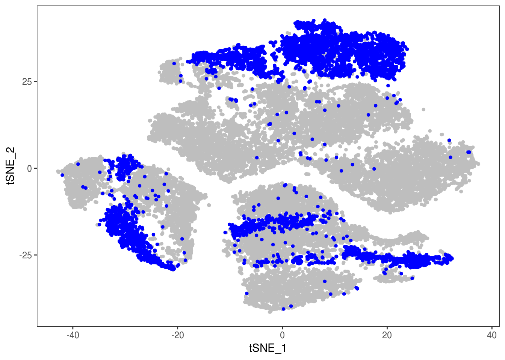
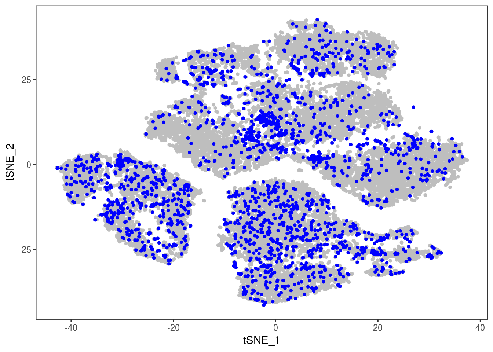
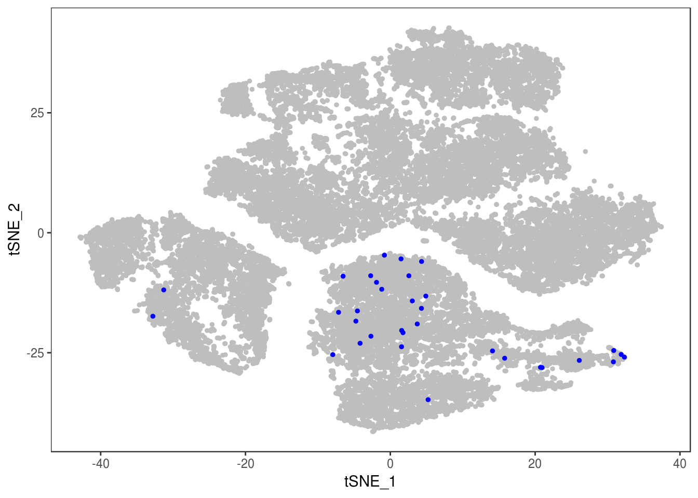
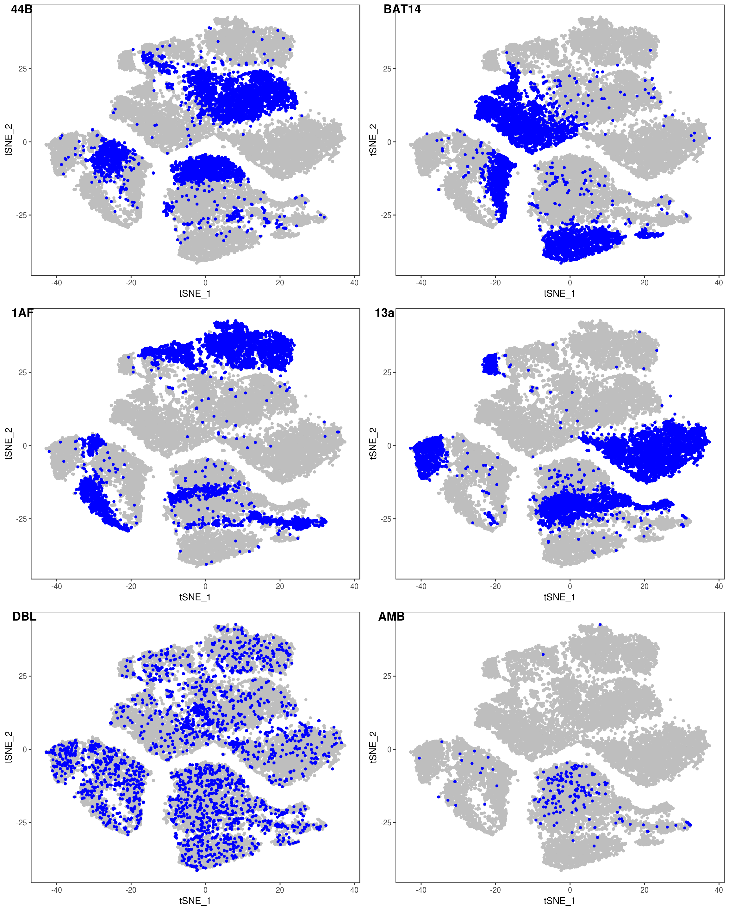
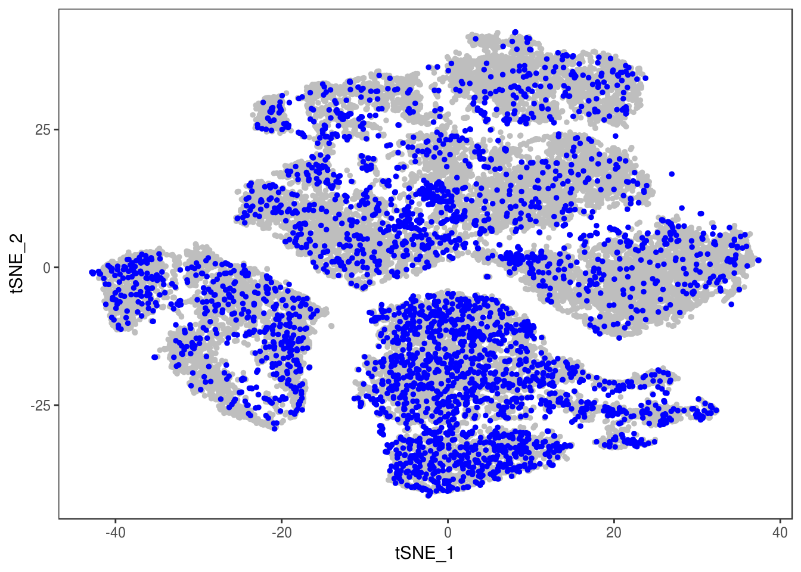
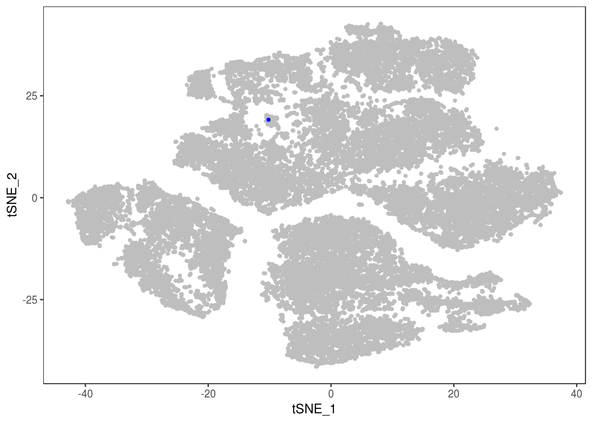
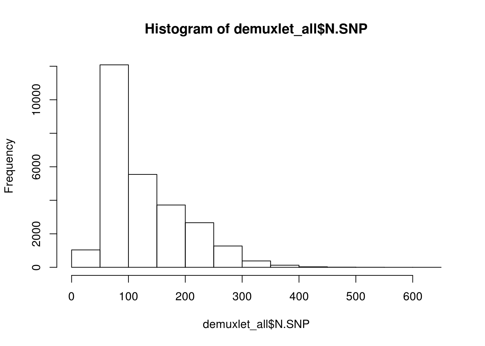
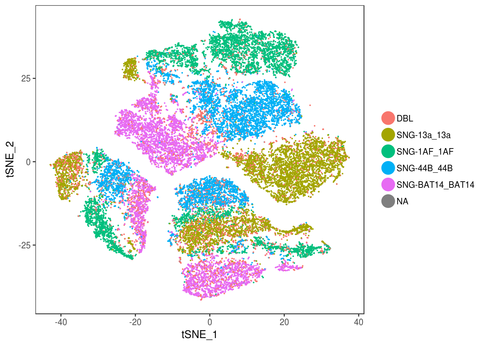
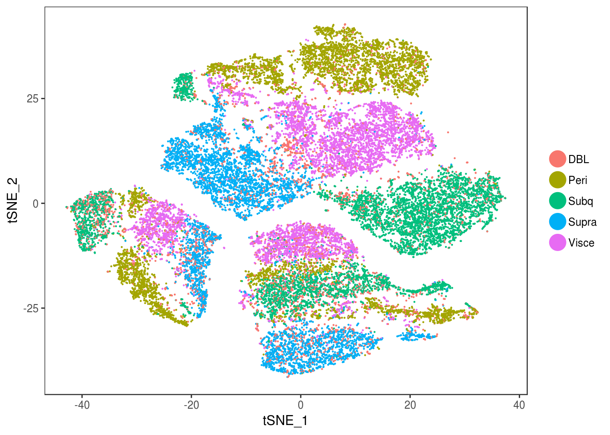
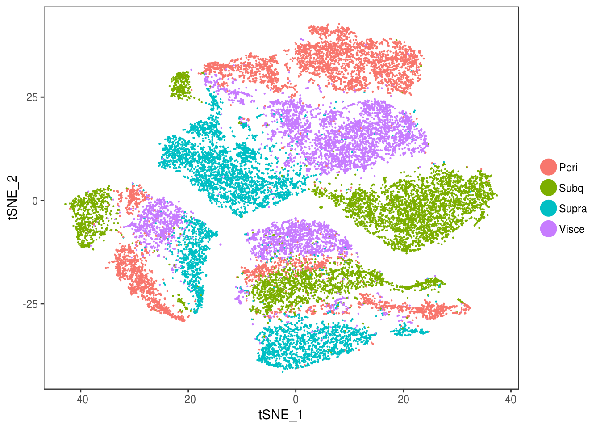

Last updated: 2019-05-13
Checks: 6 0
Knit directory: 10x-adipocyte-analysis/
This reproducible R Markdown analysis was created with workflowr (version 1.2.0). The Report tab describes the reproducibility checks that were applied when the results were created. The Past versions tab lists the development history.
Great! Since the R Markdown file has been committed to the Git repository, you know the exact version of the code that produced these results.
Great job! The global environment was empty. Objects defined in the global environment can affect the analysis in your R Markdown file in unknown ways. For reproduciblity it’s best to always run the code in an empty environment.
The command set.seed(20181026) was run prior to running the code in the R Markdown file. Setting a seed ensures that any results that rely on randomness, e.g. subsampling or permutations, are reproducible.
Great job! Recording the operating system, R version, and package versions is critical for reproducibility.
Nice! There were no cached chunks for this analysis, so you can be confident that you successfully produced the results during this run.
Great! You are using Git for version control. Tracking code development and connecting the code version to the results is critical for reproducibility. The version displayed above was the version of the Git repository at the time these results were generated.
Note that you need to be careful to ensure that all relevant files for the analysis have been committed to Git prior to generating the results (you can use wflow_publish or wflow_git_commit). workflowr only checks the R Markdown file, but you know if there are other scripts or data files that it depends on. Below is the status of the Git repository when the results were generated:
Ignored files:
Ignored: figures/
Ignored: output/bulk_analysis/
Ignored: output/demuxlet/
Ignored: output/markergenes/
Ignored: output/monocle/
Ignored: output/seurat_objects/
Ignored: output/velocyto/
Ignored: output/wgcna/
Ignored: tables/
Untracked files:
Untracked: .rstudio_old10/
Untracked: 10x-adipocyte-analysis-copy.Rproj
Untracked: analysis/.ipynb_checkpoints/velocyto_notebook_180831-checkpoint.ipynb
Untracked: analysis/10-180831-monocle-per-depot.Rmd
Untracked: analysis/10x-180831-BEAM-heatmap.Rmd
Untracked: analysis/10x-180831-pseudotime.Rmd
Untracked: code/BEAM-heatmaps.R
Untracked: code/BEAM_gsea.R
Untracked: code/colors.R
Unstaged changes:
Deleted: 10x-adipocyte-analysis.Rproj
Modified: analysis/10x-180504-DEGs-depots.Rmd
Modified: analysis/10x-180504-alignment.Rmd
Modified: analysis/10x-180504-depot-markers.Rmd
Modified: analysis/10x-180831-BATLAS.Rmd
Modified: analysis/10x-180831-TF_analysis.Rmd
Modified: analysis/10x-180831-beamGOplot.Rmd
Modified: analysis/10x-180831-colors.Rmd
Modified: analysis/10x-180831-figures.Rmd
Modified: analysis/10x-180831-general-analysis.Rmd
Modified: analysis/10x-180831-supplementary_figures.Rmd
Modified: analysis/velocyto_notebook_180504.ipynb
Modified: analysis/velocyto_notebook_180831.ipynb
Deleted: code/REMOVE/find-brown-sample-markers-180504-REMOVE.R
Deleted: code/REMOVE/find-white-sample-markers-180504-REMOVE.R
Deleted: code/REMOVE/get-genes-monocle-180831-REMOVE.R
Modified: code/compute-genelists-monocle-depots.R
Modified: code/find-depot-markers-180504.R
Modified: code/find-markers.R
Modified: code/preprocess-data.R
Modified: code/run-monocle.R
Modified: code/velocyto_preprocess.py
Note that any generated files, e.g. HTML, png, CSS, etc., are not included in this status report because it is ok for generated content to have uncommitted changes.
These are the previous versions of the R Markdown and HTML files. If you’ve configured a remote Git repository (see ?wflow_git_remote), click on the hyperlinks in the table below to view them.
| File | Version | Author | Date | Message |
|---|---|---|---|---|
| html | 158bede | Pytrik Folkertsma | 2019-04-17 | Build site. |
| Rmd | 7b6d197 | Pytrik Folkertsma | 2019-04-17 | added nCells tables |
| html | ac858a1 | Pytrik Folkertsma | 2019-04-01 | Build site. |
| Rmd | c22f3f2 | Pytrik Folkertsma | 2019-04-01 | demuxlet results |
| html | ea82b7d | Pytrik Folkertsma | 2019-04-01 | Build site. |
| Rmd | a8a36a6 | Pytrik Folkertsma | 2019-04-01 | demuxlet results |
| html | 07bf255 | Pytrik Folkertsma | 2019-03-28 | Build site. |
| Rmd | ca15d0e | Pytrik Folkertsma | 2019-03-28 | demuxlet notebook |
| Rmd | 03050a1 | Pytrik Folkertsma | 2019-03-28 | analysis updates |
library(Seurat)
library(dplyr)
library(tidyr)
library(ggplot2)data <- readRDS('output/seurat_objects/180831/10x-180831-notcleaned')getDemuxletForSample <- function(i, outputdir){
demuxlet <- read.table(paste('output/demuxlet/190110_demuxlet_new_genotypes/demuxlet_out/', outputdir, '/180831_10x_s', i, '.best', sep=''), header=T)
demuxlet$correct_barcode <- paste(unlist(sapply(strsplit(as.character(demuxlet$BARCODE), '-'), '[[', 1)), '-', i, sep='')
rownames(demuxlet) <- demuxlet$correct_barcode
cells <- rownames(data@meta.data)[data@meta.data$timepoint == paste('T', i, sep='')]
demuxlet_filtered <- demuxlet[demuxlet$correct_barcode %in% cells, ]
demuxlet_filtered['sample'] <- i
sng_dbl_abm <- sapply(strsplit(as.character(demuxlet_filtered$BEST), '-'), '[[', 1)
demuxlet_filtered['sng_dbl_amb'] <- sng_dbl_abm
#add counts singlets, doublets and ambiguous
demuxlet_filtered[c('SNG', 'DBL', 'AMB')] <- 0
demuxlet_filtered <- demuxlet_filtered %>% mutate(value=1) %>% spread(sng_dbl_amb, value, fill=0)
demuxlet_filtered['sng_dbl_amb'] <- sng_dbl_abm
return(demuxlet_filtered)
}
getAllDemuxletResults <- function(outdir){
demuxlet_list <- list()
for (i in 1:5){
demuxlet <- getDemuxletForSample(i, outdir)
demuxlet_list[[i]] <- demuxlet
}
demuxlet_all <- do.call(rbind, unname(demuxlet_list))
demuxlet_all$label <- as.character(demuxlet_all$BEST)
demuxlet_all$label[startsWith(demuxlet_all$label, 'DBL')] <- 'DBL'
demuxlet_all$label[startsWith(demuxlet_all$label, 'AMB')] <- 'AMB'
df_sda <- as.data.frame(aggregate(demuxlet_all[c('SNG', 'DBL', 'AMB')], by=list(sample=demuxlet_all$sample), FUN=sum))
df_snp <- as.data.frame(aggregate(demuxlet_all[c('N.SNP')], by=list(sample=demuxlet_all$sample), FUN=mean))
print(cbind(df_sda, df_snp$N.SNP))
print('Total number of SNG, DBL and AMB:')
print(table(demuxlet_all$sng_dbl_amb))
print(paste('Total average N.SNP:', mean(demuxlet_all$N.SNP)))
hist(demuxlet_all$N.SNP)
return(demuxlet_all)
}demuxlet_all_qc <- getAllDemuxletResults('demuxlet_plink_bed-updated') sample SNG DBL AMB df_snp$N.SNP
1 1 3074 359 0 89.41159
2 2 5220 311 0 78.10541
3 3 5761 289 0 90.71223
4 4 4058 432 2 51.57124
5 5 6659 675 31 40.57733
[1] "Total number of SNG, DBL and AMB:"
AMB DBL SNG
33 2066 24772
[1] "Total average N.SNP: 67.6666294518254"



p
demuxlet_all_qc_exons <- getAllDemuxletResults('demuxlet_plink_bed-updated.exon_only.recode') sample SNG DBL AMB df_snp$N.SNP
1 1 3056 377 0 68.64433
2 2 5153 376 2 56.22528
3 3 5721 329 0 66.24860
4 4 3957 518 17 35.26870
5 5 6460 749 156 26.79063
[1] "Total number of SNG, DBL and AMB:"
AMB DBL SNG
175 2349 24347
[1] "Total average N.SNP: 48.4977112872614"
p
demuxlet_all_qc_imputed <- getAllDemuxletResults('demuxlet_chr1_22_combined.qc_r2_maf.recode') sample SNG DBL AMB df_snp$N.SNP
1 1 2948 485 0 146.00524
2 2 5065 465 1 147.65811
3 3 5593 457 0 165.16992
4 4 4015 477 0 379.63268
5 5 5846 1519 0 86.84942
[1] "Total number of SNG, DBL and AMB:"
AMB DBL SNG
1 3403 23467
[1] "Total average N.SNP: 173.501804919802"


p
demuxlet_all_qc_exons_imputed <- getAllDemuxletResults('demuxlet_chr1_22_combined.qc_r2_maf_exon.recode') sample SNG DBL AMB df_snp$N.SNP
1 1 2890 543 0 75.05884
2 2 5211 320 0 223.39487
3 3 5474 576 0 76.20165
4 4 3714 778 0 154.23753
5 5 6139 1226 0 104.61779
[1] "Total number of SNG, DBL and AMB:"
DBL SNG
3443 23428
[1] "Total average N.SNP: 127.186892932902"
p
demuxlet_list <- list()
for (i in 1:5){
demuxlet <- getDemuxletForSample(i, 'demuxlet_chr1_22_combined.qc_r2_maf_exon.recode')
demuxlet_list[[i]] <- demuxlet
}
demuxlet_all <- do.call(rbind, unname(demuxlet_list))
demuxlet_all$label <- as.character(demuxlet_all$BEST)
demuxlet_all$label[startsWith(demuxlet_all$label, 'DBL')] <- 'DBL'
demuxlet_all$label[startsWith(demuxlet_all$label, 'AMB')] <- 'AMB'
rownames(demuxlet_all) <- demuxlet_all$correct_barcode
data <- AddMetaData(data, as.vector(demuxlet_all['label']))
TSNEPlot(data, group.by='label', pt.size=0.1)
data@meta.data$label[is.na(data@meta.data$label)] <- "AMB"
depot <- unlist(lapply(data@meta.data$label, function(x){
if (x == 'SNG-13a_13a'){
return('Subq')
} else if (x == 'SNG-1AF_1AF'){
return('Peri')
} else if (x == 'SNG-44B_44B'){
return('Visce')
} else if (x == 'SNG-BAT14_BAT14'){
return('Supra')
} else {
return('DBL')
}
}))
data@meta.data['depot'] <- depot
DimPlot(data, reduction='tsne', group.by='depot', pt.size=0.1)
Filter out doublets:
data_cleaned <- SubsetData(data, cells.use=rownames(data@meta.data)[data@meta.data$depot != 'DBL'])DimPlot(data_cleaned, reduction='tsne', group.by='depot', pt.size=0.1)
type <- unlist(lapply(as.vector(data_cleaned@meta.data$depot), function(x){
if (x == 'Subq' || x == 'Visce'){
return('white')
} else {
return('brown')
}
}))
data_cleaned@meta.data['type'] <- type
DimPlot(data_cleaned, reduction='tsne', group.by='type', pt.size=0.1)
paste('Nr of cells before removing doublet and ambiguous:', length(rownames(data@meta.data)))[1] "Nr of cells before removing doublet and ambiguous: 26872"paste('Nr of cells in cleaned up data:', length(rownames(data_cleaned@meta.data)))[1] "Nr of cells in cleaned up data: 23428"Number of cells per donor and timepoint.
n_cells <- as.data.frame(as.matrix(ftable(data_cleaned@meta.data$timepoint, data_cleaned@meta.data$depot)))
n_cells[nrow(n_cells), ] <- colSums(n_cells)
rownames(n_cells)[length(rownames(n_cells))] <- 'total'
n_cells[,ncol(n_cells)+1] <- rowSums(n_cells)
names(n_cells)[length(names(n_cells))] <- 'total'
n_cells Peri Subq Supra Visce total
T1 692 750 608 840 2890
T2 1273 1336 1351 1251 5211
T3 1259 1605 1118 1492 5474
T4 1236 762 857 859 3714
T5 1139 1816 1640 1544 6139
total 5599 6269 5574 5986 23428#write.table(n_cells, '../tables/tables_paper/supplementary_tables/10x-180831-ncells.tsv', sep='\t', quote=F, col.names=NA)df <- merge(demuxlet_all_qc_exons_imputed, data@meta.data, by.x='correct_barcode', by.y='row.names')
n_cells_timepoint_dbl_sng <- as.data.frame(as.matrix(ftable(df$timepoint, df$sng_dbl_amb)))
ncells_timepoint_snps <- aggregate(df$N.SNP, by=list(timepoint=df$timepoint), FUN=mean)
n_cells_combined <- merge(n_cells_timepoint_dbl_sng, ncells_timepoint_snps, by.x='row.names', by.y='timepoint')
rownames(n_cells_combined) <- n_cells_combined$Row.names
n_cells_combined['Row.names'] <- NULL
names(n_cells_combined)[length(names(n_cells_combined))] <- 'avg N.SNP'
#n_cells_combined[nrow(n_cells_combined)+1, ] <- colSums(n_cells_combined)
#rownames(n_cells_combined)[length(rownames(n_cells_combined))] <- 'total'
#n_cells_combined[,ncol(n_cells_combined)+1] <- rowSums(n_cells_combined)
#names(n_cells_combined)[length(names(n_cells_combined))] <- 'total'#write.table(n_cells_combined, '../tables/tables_paper/supplementary_tables/10x-180831-ncells_demuxlet.tsv', sep='\t', quote=F, col.names=NA)#data@meta.data['depot'] <- substr(data@meta.data$sample_name, 1, nchar(data@meta.data$sample_name)-2)
#saveRDS(data, '../../10x-adipocyte-analysis/output/10x-180831')demuxlet_all_qc['vcf'] <- 'qc'
demuxlet_all_qc_exons['vcf'] <- 'qc_exons'
demuxlet_all_qc_imputed['vcf'] <- 'qc_imputed'
demuxlet_all_qc_exons_imputed['vcf'] <- 'qc_exons_imputed'
demuxlet_all <- rbind(demuxlet_all_qc, demuxlet_all_qc_exons, demuxlet_all_qc_exons_imputed, demuxlet_all_qc_imputed)
test <- aggregate(demuxlet_all['sng_dbl_amb'], by=list(demuxlet_all$vcf, demuxlet_all$sng_dbl_amb), FUN=length)
df_aggregated <- aggregate(demuxlet_all[c('SNG', 'DBL', 'AMB')], by=list(VCF=demuxlet_all$vcf, timepoint=demuxlet_all$sample), FUN=sum)
df_sng_dbl_amb_vcf <- aggregate(demuxlet_all[c('SNG', 'DBL', 'AMB')], by=list(VCF=demuxlet_all$vcf), FUN=sum)Number of SNPs, SNG, DBL, AMB
df_snps_vcf <- aggregate(demuxlet_all['N.SNP'], by=list(VCF=demuxlet_all$vcf), FUN=mean)
df_sng_dbl_amb_vcf['N.SNP'] <- df_snps_vcf$N.SNP
as.data.frame(df_sng_dbl_amb_vcf) VCF SNG DBL AMB N.SNP
1 qc 24772 2066 33 67.66663
2 qc_exons 24347 2349 175 48.49771
3 qc_exons_imputed 23428 3443 0 127.18689
4 qc_imputed 23467 3403 1 173.50180df_snps_vcf_timepoint <- aggregate(demuxlet_all['N.SNP'], by=list(VCF=demuxlet_all$vcf, timepoint=demuxlet_all$sample), FUN=mean)
ggplot(df_snps_vcf_timepoint, aes(x=VCF, y=N.SNP, fill=factor(timepoint))) +
geom_bar(stat='identity', position='dodge') +
labs(title='Number of SNPs', fill='timepoint', x='VCF file', y='') +
theme_gray() +
theme(axis.text.x = element_text(angle = 45, hjust = 1))
| Version | Author | Date |
|---|---|---|
| 158bede | Pytrik Folkertsma | 2019-04-17 |
Number of singlets, doublets and ambiguous per VCF file.
ggplot(df_aggregated, aes(x=VCF, y=SNG, fill=factor(timepoint))) +
geom_bar(stat='identity', position='dodge') +
labs(title='Number of singlets', fill='timepoint', x='VCF file', y='') +
theme_gray() +
theme(axis.text.x = element_text(angle = 45, hjust = 1))
| Version | Author | Date |
|---|---|---|
| 158bede | Pytrik Folkertsma | 2019-04-17 |
ggplot(df_aggregated, aes(x=VCF, y=DBL, fill=factor(timepoint))) +
geom_bar(stat='identity', position='dodge') +
labs(title='Number of doublets', fill='timepoint', x='VCF file', y='') +
theme_gray() +
theme(axis.text.x = element_text(angle = 45, hjust = 1))
| Version | Author | Date |
|---|---|---|
| 158bede | Pytrik Folkertsma | 2019-04-17 |
ggplot(df_aggregated, aes(x=VCF, y=AMB, fill=factor(timepoint))) +
geom_bar(stat='identity', position='dodge') +
labs(title='Number of ambiguous', fill='timepoint', x='VCF file', y='') +
theme_gray() +
theme(axis.text.x = element_text(angle = 45, hjust = 1))
| Version | Author | Date |
|---|---|---|
| 158bede | Pytrik Folkertsma | 2019-04-17 |
Percentage doublets
paste('QCed:',sum(demuxlet_all_qc$DBL) / length(demuxlet_all_qc$DBL))[1] "QCed: 0.0768858620817982"paste('QCed, exons only:', sum(demuxlet_all_qc_exons$DBL) / length(demuxlet_all_qc_exons$DBL))[1] "QCed, exons only: 0.0874176621636709"paste('QCed + imputed:', sum(demuxlet_all_qc_imputed$DBL) / length(demuxlet_all_qc_imputed$DBL))[1] "QCed + imputed: 0.126642104871423"paste('QCed + imputed, exons only', sum(demuxlet_all_qc_exons_imputed$DBL) / length(demuxlet_all_qc_exons_imputed$DBL))[1] "QCed + imputed, exons only 0.128130698522571"
sessionInfo()R version 3.5.3 (2019-03-11)
Platform: x86_64-pc-linux-gnu (64-bit)
Running under: Storage
Matrix products: default
BLAS/LAPACK: /usr/lib64/libopenblas-r0.3.3.so
locale:
[1] LC_CTYPE=en_US.UTF-8 LC_NUMERIC=C
[3] LC_TIME=en_US.UTF-8 LC_COLLATE=en_US.UTF-8
[5] LC_MONETARY=en_US.UTF-8 LC_MESSAGES=en_US.UTF-8
[7] LC_PAPER=en_US.UTF-8 LC_NAME=C
[9] LC_ADDRESS=C LC_TELEPHONE=C
[11] LC_MEASUREMENT=en_US.UTF-8 LC_IDENTIFICATION=C
attached base packages:
[1] stats graphics grDevices utils datasets methods base
other attached packages:
[1] tidyr_0.8.3 dplyr_0.8.0.1 Seurat_2.3.4 Matrix_1.2-17 cowplot_0.9.4
[6] ggplot2_3.1.0
loaded via a namespace (and not attached):
[1] Rtsne_0.15 colorspace_1.4-1 class_7.3-15
[4] modeltools_0.2-22 ggridges_0.5.1 mclust_5.4.3
[7] rprojroot_1.3-2 htmlTable_1.13.1 base64enc_0.1-3
[10] fs_1.2.7 rstudioapi_0.10 proxy_0.4-23
[13] npsurv_0.4-0 flexmix_2.3-15 bit64_0.9-7
[16] mvtnorm_1.0-10 codetools_0.2-16 splines_3.5.3
[19] R.methodsS3_1.7.1 lsei_1.2-0 robustbase_0.93-4
[22] knitr_1.22 jsonlite_1.6 Formula_1.2-3
[25] workflowr_1.2.0 ica_1.0-2 cluster_2.0.7-1
[28] kernlab_0.9-27 png_0.1-7 R.oo_1.22.0
[31] compiler_3.5.3 httr_1.4.0 backports_1.1.3
[34] assertthat_0.2.1 lazyeval_0.2.2 lars_1.2
[37] acepack_1.4.1 htmltools_0.3.6 tools_3.5.3
[40] igraph_1.2.4 gtable_0.3.0 glue_1.3.1
[43] reshape2_1.4.3 RANN_2.6.1 Rcpp_1.0.1
[46] trimcluster_0.1-2.1 gdata_2.18.0 ape_5.3
[49] nlme_3.1-137 iterators_1.0.10 fpc_2.1-11.1
[52] gbRd_0.4-11 lmtest_0.9-36 xfun_0.5
[55] stringr_1.4.0 irlba_2.3.3 gtools_3.8.1
[58] DEoptimR_1.0-8 MASS_7.3-51.1 zoo_1.8-5
[61] scales_1.0.0 doSNOW_1.0.16 parallel_3.5.3
[64] RColorBrewer_1.1-2 yaml_2.2.0 reticulate_1.11.1
[67] pbapply_1.4-0 gridExtra_2.3 rpart_4.1-13
[70] segmented_0.5-3.0 latticeExtra_0.6-28 stringi_1.4.3
[73] foreach_1.4.4 checkmate_1.9.1 caTools_1.17.1.2
[76] bibtex_0.4.2 Rdpack_0.10-1 SDMTools_1.1-221
[79] rlang_0.3.2 pkgconfig_2.0.2 dtw_1.20-1
[82] prabclus_2.2-7 bitops_1.0-6 evaluate_0.13
[85] lattice_0.20-38 ROCR_1.0-7 purrr_0.3.2
[88] labeling_0.3 htmlwidgets_1.3 bit_1.1-14
[91] tidyselect_0.2.5 plyr_1.8.4 magrittr_1.5
[94] R6_2.4.0 snow_0.4-3 gplots_3.0.1.1
[97] Hmisc_4.2-0 pillar_1.3.1 whisker_0.3-2
[100] foreign_0.8-71 withr_2.1.2 fitdistrplus_1.0-14
[103] mixtools_1.1.0 survival_2.43-3 nnet_7.3-12
[106] tsne_0.1-3 tibble_2.1.1 crayon_1.3.4
[109] hdf5r_1.1.1 KernSmooth_2.23-15 rmarkdown_1.12
[112] grid_3.5.3 data.table_1.12.0 git2r_0.25.2
[115] metap_1.1 digest_0.6.18 diptest_0.75-7
[118] R.utils_2.8.0 stats4_3.5.3 munsell_0.5.0